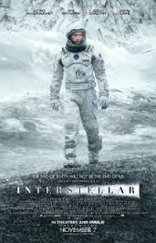

Titolo: Interstellar
Anno: 2014
Regia: Christopher Nolan.
Interpreti: Matthew McConaughey, Anne Hathaway, Jessica Chastain, Michael Caine, John Lithgow,
Mackenzie Foy, Ellen Burstyn, Casey Affleck, Matt Damon, Topher Grace, Wes Bentley, David Gyasi,
Timothée Chalamet, William Devane, Jeff Hephner, Elyes Gabel, David Oyelowo.
Durata: 169 min
Trama:
Una piaga sta uccidendo i raccolti della Terra, da diversi decenni l'umanità è in crisi da cibo e quasi
tutti sono diventati agricoltori per supplire a queste esigenze. La scienza è ormai dimenticata e anche
ai bambini viene insegnato che l'uomo non è mai andato sulla Luna, si trattava solo di propaganda. L'ex
astronauta Cooper, mai andato nello spazio e costretto a diventare agricoltore, scopre grazie all'intuito
della figlia che la NASA è ancora attiva in gran segreto, che il pianeta Terra non si salverà, che è comparso
un warmhole vicino Saturno in grado di condurli in altre galassie e che qualcuno deve andare lì a cercare
l'esito di tre diverse missioni partite anni fa. Forse una di quelle tre ha scoperto un pianeta buono per
trasferire la razza umana e in quel caso è già pronto un piano di evacuazione. Andare e tornare è l'unica
maniera che Cooper ha di dare un futuro ai propri figli.
Questa volta c'è 2001: Odissea nello spazio nel mirino di Christopher Nolan. Interstellar non fa mistero di
volersi misurare in quel campo da gioco e lo dice più volte con le immagini in quelle che sarebbe riduttivo
chiamare citazioni ma sembrano più dichiarazioni d'intenti, come se il film di Kubrick fosse un genere a sè
e Interstellar ne stesse solo rispettando le regole. La differenza tra i due sta però nel fatto che il regista
di Inception e Memento è il massimo esempio di cineasta-ingegnere, un abile costruttore di ingranaggi dalla
complessità impressionante che con invidiabile chiarezza corrono verso una risposta finale. Le domande poste
dai suoi film non rimangono quasi mai appese (la trottola di Inception è una delle poche eccezioni in un film
che comunque è pieno di risposte) e anche Interstellar, arrivato là dove Kubrick si fermava, avanza per fornire
delle risposte che inevitabilmente risultano più povere di un indeterminato mistero. Per Nolan i misteri non
sono nella fine del viaggio ma nelle situazioni che l'hanno messo in moto, sono da rintracciarsi nei molti
errori e nelle molte menzogne dei personaggi (quasi tutti sbagliano qualcosa, quasi tutti ad un certo punto
mentono a se stessi o agli altri) e nelle intuizioni sentimentali che hanno, tutto comunque parte di un puzzle
perfetto.
Quel che ogni volta questo autore ci fa riscoprire è il piacere dell'audacia. Non c'è nessuno oggi capace di
osare così tanto, nessuno così determinato a non voler essere come gli altri. Il futuro messo in scena da
Interstellar non somiglia a nessuno dei molti già visti, è uno in cui una società di diverse decine di anni
avanti a noi vive in un passato recentissimo (sembra la fine degli anni '90), apparentemente idilliaco ma
intimamente disperato. L'uomo ha smesso di osare e, essendo a rischio estinzione, ha cominciato a conservare
ma in questo ritorno alla vita bucolica, tutta cieli blu e campi coltivati, è collegato un profondo senso di
sconfitta, tanto quanto uno di esaltazione è invece legato alle potenzialità della scienza e della tecnologia
(mai nemica ma quasi più amica ed empatica dei propri simili), un assunto che già da solo ribalta i luoghi
comuni del cinema per ambire ad un senso di meraviglia ed avventura che non siano figli solo dell'eroismo
individuale del cinema americano (che comunque non manca) ma della semplicità spielberghiana, quella capacità
invidiabile di suscitare i sentimenti più basilari quali meraviglia, desiderio e stupore.
In maniera non diversa è audace la tecnica con cui il regista, già da Inception, mostra di avere un'idea
propria dell'uso narrativo del montaggio parallelo, lavorando sulla suspense tra due linee di trama nello
stesso momento (quella dell'astronauta Cooper e della figlia Murph o in certi casi quelle degli eventi che
stanno accadendo contemporaneamente ai diversi astronauti) o come intenda il tempo. In quasi ogni suo film
Nolan ha dimostrato che il cinema può raccontare storie intrecciandone la trama a partire dalla sovrapposizione
di temporalità diverse, trovando così percorsi nuovi anche per parabole canoniche. In Interstellar il tempo
degli astronauti non è quello sulla Terra, i loro eventi si svolgono in momenti differenti ma lo stesso
comunicano di continuo e in maniere sempre nuove, rinfrescando espedienti di suspense ormai usurati. È parte
del fascino da puzzle dei film di Nolan ma più in grande è anche la dimostrazione di una vivacità narrativa
e un'originalità registica fortissime che impongono un passo diverso ai suoi film e costringono lo spettatore
al piacere della concentrazione. I tempi del film seguono un ritmo tutto proprio, con uno stacco vengono
saltati diversi mesi, piazzando ellissi là dove altri avrebbero indugiato (gli astronauti non si preparano?
Cosa succede tra l'accettazione della missione e la partenza?) e in altri casi vengono allungati a dismisura
momenti su cui altri avrebbero sorvolato.
Che tutto questo accada in un kolossal hollywoodiano è forse la sorpresa più grande che il pavido cinema
di questi anni, contento solo delle proprie sicurezze, poteva regalarci.
Commenti: